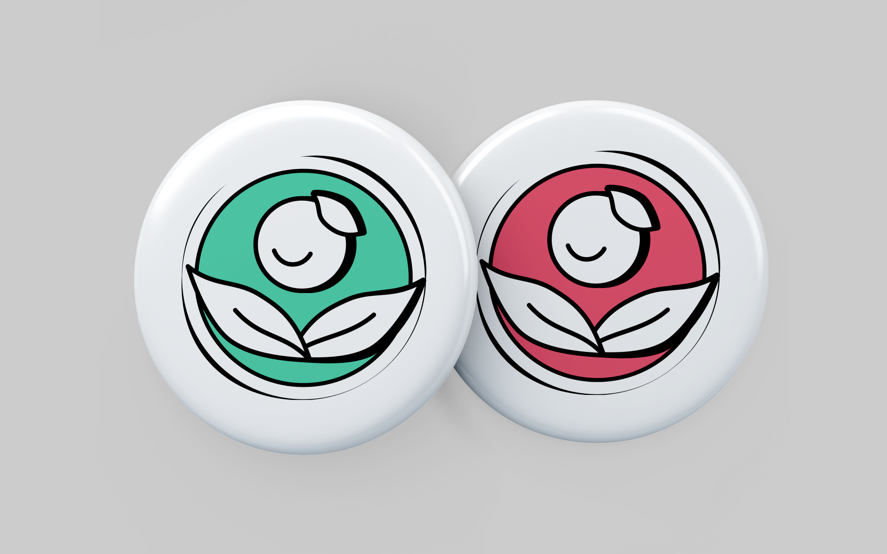
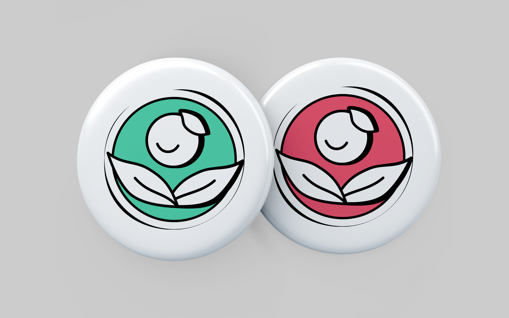

Background
The inaugural edition of the Nikkei Farmers’ Market “産地直送” is being held in
the Japanese Garden at the Nikkei National Museum and Cultural Centre
in Burnaby, British Columbia. Focusing on bringing together the local
community, the market has 14 to 16 vendors offering both food and artisan
crafts. Incorporating monthly themes and cultural celebrations where possible,
the Nikkei market will also feature live music and educational family-friendly
workshops.
The organization held a logo design contest as they kick off the second year of their
farmers' market. The winning design will be used as the official logo for promotional
materials, social media, and other items they produce.
The Brief
For the contest, the organization laid out a set of values they would like to
communicate through the logo. This includes: Fresh, Local, Nutritious, Artisan,
Community, Organic, Craft, Japan/Japanese, Garden, and Connection.
Their target audience reflects the brand’s desire to be inclusive and empower the
local community—anyone of all ages interested and enthusiastic about farmers' markets
and supporting local. As someone who has visited the farmers' market in the past,
I reflected on my experience to discover the essence of what resonates with
people who participate in this event.
With vendors consisting of those who are not only Japanese but those who also come from different
ethnic backgrounds, the market creates an atmosphere that is inviting to all people. It acts
as a time and place where people can come together to celebrate Japanese culture while sharing
their work with the local community.

Core Values
I organized the given list of words into three themes that encompass the brand's core values. Out of the three themes, I extracted key words that articulate the foundational values of the farmers' market.
My proposal was to develop an identity that visually conveys a sense of Community, Craftsmanship, and Nourishment. These core values are visualized by appearing professional while being inviting.
Exploration
After establishing a direction, I studied logos that convey similar values to what I had envisioned. The logos that intend to give a sense of Community have round and soft form that are familiar and approachable. The logos that reflect a sense of Craftsmanship use elegant typographic styles and perceptive shapes that give a sense of tradition and professionalism. The logos that intend to represent Nourishment are kept clean with graphics that help convey freshness. My goal was to extrapolate these ideas into a new logo design.
I kept the three themes—Community, Craftsmanship, and Nourishment—in mind to explore what the logo could look like. Below are some of the sketches I made to synthesize the core values into a visual representation. Each iteration inspired the next until I landed on a direction that I could tinker with. Some felt inelegant, some were overly playful, and some felt too corporate—they were not communicating the core values as effectively as I had liked.
Final Design
The final design is a personified plant/flower that is protuding out of a seal stamp. It is an
articulation of the brand's core values that achieve a balance between professionalism and friendliness.
The open leaves create an inviting gesture as if it is welcoming the audience with open arms.
The inkan (印鑑),
a seal stamp used in place of a signature on documents in Japan, symbolizes the human touch
that shape the foundation of the market. The figure sticking out of the stamp, facing up with
a smile reflect the positive energy brought by the vendors. The combination of these visual
elements capture Nikkei Garden Farmers' Market's aspiration to be inclusive while empowering
the local community with its playful yet polished look.

The primary symbol is in a vertical layout that includes the “日系” (Nikkei) mark. It is contained inside two layers of rectangles to resemble an emblem, which act as a distinctive badge for the organization. The red and green color variants are offered to represent nourishment and Japanese culture, and alternative layouts of the logo was made to be flexible for different contexts.
 

Website